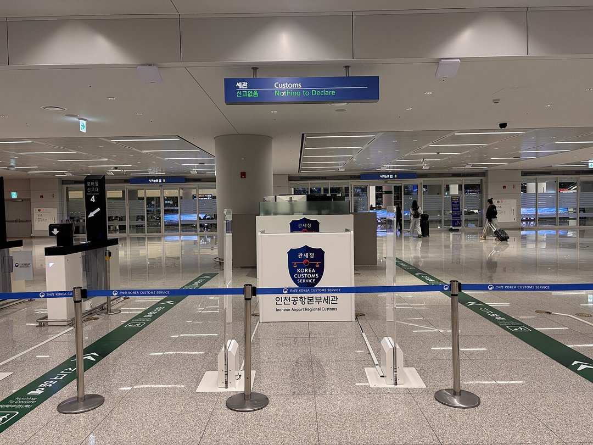

📷 사진 1 자리

▲ 인천공항 세관 검사 구역 · 사진: Choikwangmo25 / CC0 / 위키미디어 공용
해외에서 처방받은 위고비·마운자로를 직접 들고 들어오는 길이 11월 12일 열렸어요. 일주일 만에 식품의약품안전처가 "반복해서 들여오면 통관이 보류될 수 있다"는 안내를 냈고요. 몇 번부터가 '반복'인지, 왜 막는지, 들여온 약으로 문제가 생기면 어떻게 되는지까지 공식 자료로 따라가 봤어요.
3줄 요약
무엇이 허용됐나
식약처와 관세청이 협의해 11월 12일부터 자가 치료용 의약품의 개인 휴대 반입을 허용했어요. 조건은 그 나라의 정상 의료체계 안에서 정식 허가를 받은 약을 처방·구매한 경우예요.
| 구분 | 기준 |
|---|---|
| 기본 한도 | 6병 |
| 6병을 넘으면 | 용법상 3개월 복용량까지 |
| 주 1회 주사제 | 최대 12개 |
| 안 되는 것 | 마약류, 택배·우편·직구 |
본인이 비행기로 직접 들고 오는 경우만 해당해요. 해외 직구나 국제우편으로 받는 건 이번 허용에 들어가지 않아요. 원래 먹던 약을 들고 출국했다 돌아오는 환자, 국내에 들어오는 외국인·유학생도 같은 기준을 적용받아요.
왜 그동안 막혀 있었나
2024년 10월 식약처는 위고비·마운자로·삭센다를 관세청에 '유해의약품'으로 통보했어요. 이후 개인 반입은 사실상 막혔고, 정상 처방을 받은 환자도 세관에서 약이 묶이는 일이 생겼어요. 이번 조치는 이런 불편을 풀기 위한 것이라고 정부는 설명했어요.
📷 사진 2 자리
▲ 인천공항 제2터미널 입국장 · 사진: AirportTerminalGuy / CC BY 4.0 / 위키미디어 공용
문을 연 배경에는 가격 차이도 있어요. 가격 비교 플랫폼 기준 국내 마운자로 2.5mg 4주분은 평균 29만~30만 원이에요. 일본 일부 의료기관은 4주분을 1만 엔 안팎에 처방한다는 보도가 이어졌어요. 일본에서는 이 약이 당뇨 치료용으로 건강보험 약가가 정해져 있어요. 반면 국내에서 비만 치료로 쓰면 비급여라 값이 높아요.
그래서 '스시자로'라는 말까지 나왔어요. 일본에 가서 마운자로를 사 온다는 뜻이에요.
숫자로 보면
허용 전부터 들여오려는 사람은 크게 늘고 있었어요. 관세청 자료를 인용한 보도에 따르면 비만치료제 불법 반입 적발은 올해 8월까지 5,030건이에요. 지난해 1년 동안 적발된 1,189건의 4.2배예요. 적발은 국제우편 경로가 가장 많았어요.
| 항목 | 숫자 |
|---|---|
| 불법 반입 적발(2026년 1~8월) | 5,030건 |
| 2025년 연간 적발 | 1,189건 |
| 국내 2.5mg 4주분 평균가 | 29만~30만 원 |
| 일본 일부 의료기관 4주분 | 1만 엔 안팎 |
'반복 반입'은 어디부터
정부가 11월 19일 낸 Q&A에 예시가 있어요. 3개월 이내에 3개월분을 여러 차례 들여오는 경우예요. 식약처와 관세청은 이런 반입을 자가 치료 목적에 맞지 않는다고 보고 통관을 보류할 수 있다고 했어요.
관세청은 반복인지 볼 때 출입국 빈도, 최근 검사 이력, 해외 결제 이력을 함께 본다고 밝혔어요. 들여온 약을 국내에서 되파는 것도 안 돼요. 식약처는 온라인 판매를 중심으로 단속하겠다고 했어요.
다만 허점을 짚는 목소리도 있어요. 약업 전문지 데일리팜은 반입 뒤 국내 유통이나 반복 반입을 추적할 관리 장치가 없다고 지적했어요. 기준은 열렸는데 사후 관리는 세관의 판단에 기대는 구조예요.
부작용이 생기면
국내에는 약을 제대로 쓰고도 부작용 피해를 입으면 진료비 등을 보상하는 의약품 부작용 피해구제 제도가 있어요. 그런데 「의약품 부작용 피해구제에 관한 규정 시행규칙」 제6조는 자가치료용 의약품을 지급 제외 대상으로 정해 두고 있어요. 해외에서 처방받아 들고 온 약이 여기에 해당해요.
이 제도로 받을 수 있는 건 진료비, 장애일시보상금, 사망일시보상금, 장례비예요. 국내에서 허가받은 약을 국내에서 처방받았다면 받을 수 있었던 보호를 해외 구매로 내려놓는 셈이에요.
식약처도 해외에서 산 약은 회수나 보상 같은 법적 보호를 받기 어렵다고 안내했어요. 이동하는 동안 보관 온도를 지키지 못하면 효과와 안전을 장담하기 어렵다는 점도 덧붙였어요.
식약처가 지난해 9월 낸 사용 안내서는 위장관 장애와 주사 부위 반응을 흔한 이상사례로 꼽았어요. 급성 췌장염과 담석증은 의료진에게 꼭 알려야 할 중요 이상사례로 적었고요. 임신·수유 중에는 쓰면 안 돼요. 당뇨약과 함께 쓰면 저혈당 위험이 커진다는 주의도 담겼어요. 해외에서 처방받았더라도 국내 주치의에게 복용 사실을 알려 두는 게 안전해요.
들여오기 전 확인할 것
자주 묻는 질문
Q. 해외 쇼핑몰에서 사서 택배로 받아도 되나요?
안 돼요. 이번 허용은 본인이 직접 들고 오는 휴대 반입만이에요.
Q. 몇 번까지 들여와도 되나요?
정확한 횟수는 정하지 않았어요. 다만 3개월 안에 3개월분을 여러 번 들여오면 반복 반입으로 볼 수 있다는 게 정부 예시예요.
Q. 부작용이 생기면 국가에서 보상받을 수 있나요?
어려워요. 자가치료용 의약품은 시행규칙상 피해구제 지급 제외 대상이에요.
일본에서 사면 국내의 3분의 1 값이라는 계산에는 빠진 비용이 있어요. 부작용 피해구제, 국내 의료진의 처방 관리, 운반 중 보관까지 모두 본인이 떠안는 값이에요. 기준이 '처방받은 환자의 불편 해소'에서 출발한 만큼, 싼 값보다 처방과 관리가 가능한지를 먼저 따지는 게 맞아요.
반복 반입의 구체적 횟수 기준은 아직 공개되지 않았어요. 출국 전 궁금한 점은 식약처 의약품관리과(043-719-2652)나 관세청 관세국경감시과(042-481-7831)에 물어볼 수 있어요.
함께 보면 좋은 이슈